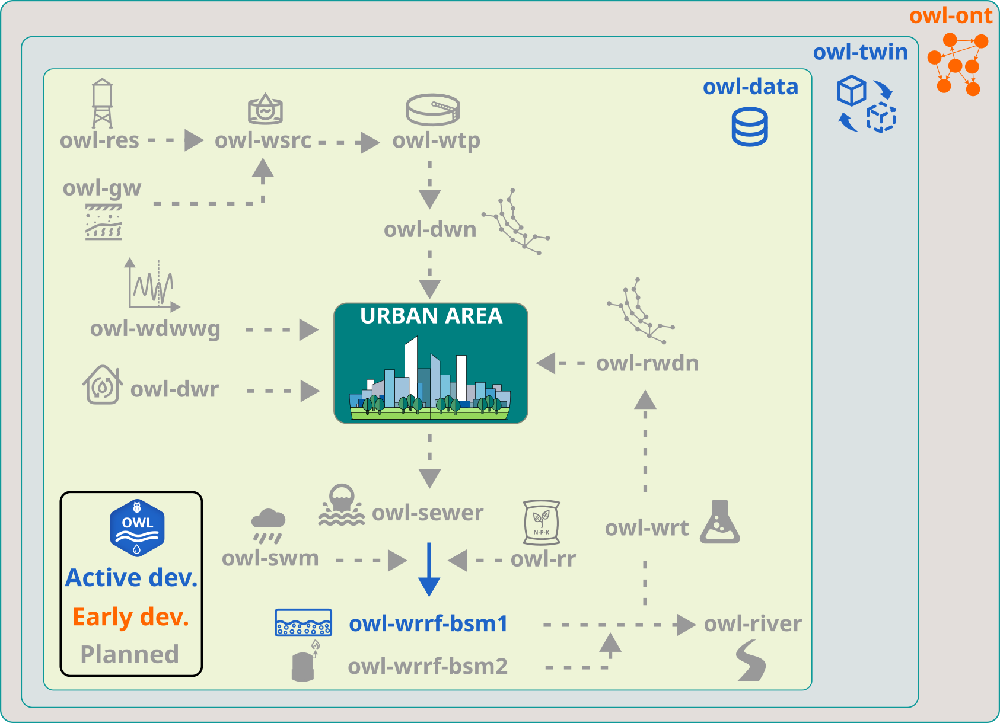

Roadmap#
This roadmap outlines the current development priorities and longer-term direction of the Open Water Lab (OWL) ecosystem.
It is intended to provide transparency on planned developments, help users understand the maturity of the available tools, and support collaboration with contributors and partners.
The roadmap is indicative and may evolve as the ecosystem grows.The figure below presents the various components envisioned in OWL with their development status.
{kind=link}

Current priorities#
Ecosystem foundations#
Establish a consistent package structure across the OWL ecosystem
Maintain unified documentation, branding, and development workflows
Improve testing, continuous integration, and release practices
Expand the central documentation website
Core overarching packages#
Further test and validate owl-data for structured handling of water-related datasets
Further test and validate owl-twin for reusable digital twin pipelines and workflows
Develop first vesion of owl-ont as an ontology model for data architecture across OWL ecosystem
Short-term goals#
owl-data#
Add usage examples and API documentation
Improve testing coverage for core data workflows
owl-twin#
Add usage examples and API documentation
Improve testing coverage for core data workflows
Document integration with OWL data and simulation components
owl-ont#
Develop the first version of the ontology model
Develop data mapping functionalities for knowledge graph creation
Add usage examples and API documentation
owl-wrrf#
Test and further fine tune the control schemes in BSM1
Provide a fully functional BSM1 version
Add usage examples and API documentation
Mid-term goals#
Domain-specific simulation modules#
Develop
owl-wsrcfor water source modellingDevelop
owl-wtpfor drinking water treatment modellingDevelop
owl-wdnfor drinking water distribution modellingDevelop
owl-wdwwgfor water demand and wastewater generation modellingDevelop
owl-sewerfor sewer transport modellingDevelop
owl-riverfor river water quality modelling
Documentation and tutorials#
Add practical tutorials and reproducible example workflows
Improve package-level and ecosystem-level documentation
Provide guidance for contributors who want to integrate new models and tools
Community and collaboration#
Strengthen contribution pathways for external collaborators
Encourage reuse of OWL tools in research and engineering practice
Build connections with related open-source and academic initiatives
Long-term vision#
The long-term ambition of Open Water Lab (OWL) is to provide a modular and extensible ecosystem of free and open-source tools for:
water data analysis and management
digital twin development
simulation and modelling of diverse water systems
reproducible and transparent scientific workflows
integration of water models across scales and domains
In the long-term OWL plans to include more advanced urban water system components including:
owl-resfor water reservoir modellingowl-gwfor groundwater modellingowl-dwrfor decentralized water treatment modellingowl-swmfor stormwater management modellingowl-rwdnfor reclaimed water distribution modellingowl-wrtfor advanced water reuse process modellingowl-wrrf-bsm2for plant-wide wastewater and sludge treatment modellingowl-rrfor resource recovery modelling
Development status overview#
OWL module |
Status |
Description |
|
Active development |
Data handling and validation |
|
Active development |
Automated digital twin pipelines |
|
Active development |
Water reource recovery facility modelling |
|
Early development |
Ontology and dynamic knowledge graph |
|
Planned |
Water source node modelling |
|
Planned |
Water treatment modelling |
|
Planned |
Water distribution network modelling |
|
Planned |
Water demand and wastewater generation modelling |
|
Planned |
Sewer network modelling |
|
Planned |
River water quality modelling |
Contributing to the roadmap#
Contributions, suggestions, and feedback are welcome.
If you would like to propose a new feature, package, or domain-specific extension, please open an issue or discussion in the relevant repository or contact the OWL maintainers through the project channels.